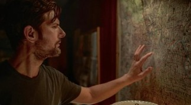

My List
My List
Continue Watching
Monster
S1 E1 · Episode One · 0:04
Obsession
Resume from 0:16

The Whisper Man
Resume from [0:44:10]
In the Grey
Resume from [1:02:05]
Practical Magic
Resume from [0:20:31]
The Ministry of Ungentlemanly Warfare
Resume from [1:40:02]